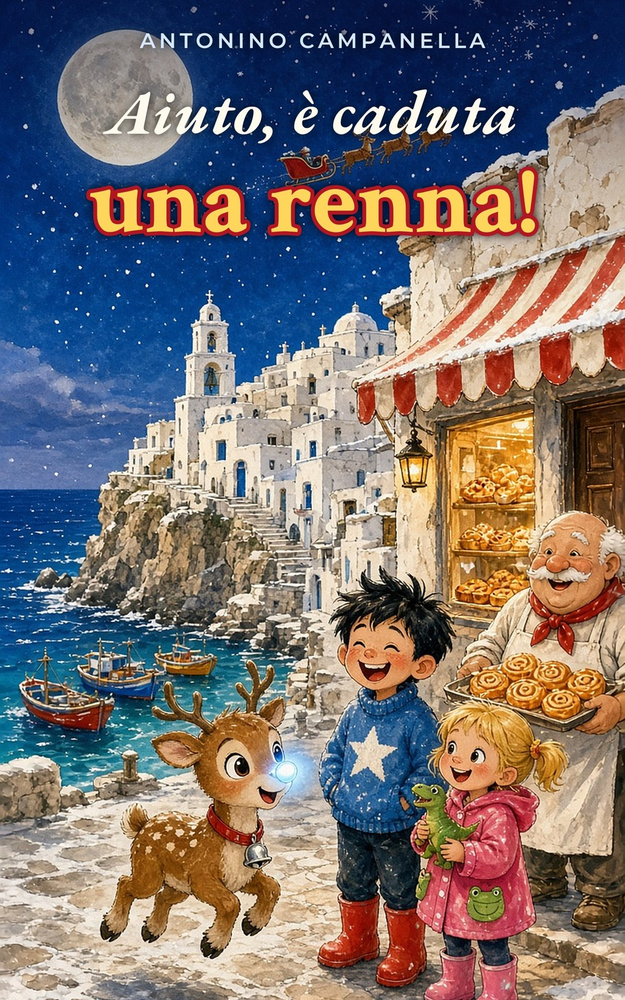

Sto aprendo il libro…

Edizione gratuita · Natale 2026
Aiuto, è caduta una renna!
di Antonino Campanella
A Torre Pinella non nevica mai. Poi, una notte, una piccola renna apprendista cade sul tetto della pasticceria… e tutto cambia.
Quattordici capitoli brevi, uno per sera. Illustrazioni a colori. E, per i bambini, un gioco completo per volare con Briciola — anche mentre leggete.
- 14 capitoli
- Voce narratore Scripto
- Pentagramma Tin!
- Gioco Briciola
- Niente pubblicità
Tocca lo schermo o premi spazio: Briciola fa «hic!» e vola. Funziona su telefono, tablet e computer.